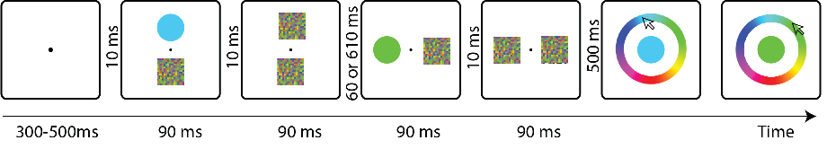
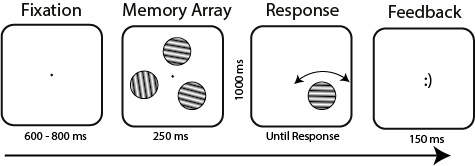

Bilişsel Nörobilim
University of Groningen, Groningen, Hollanda

University of Groningen, Groningen, Hollanda
Brooklyn College, City University of New York, NY, ABD
Ankara Universitesi, Ankara, Türkiye
Rijksuniversiteit Groningen
Rijksuniversiteit Groningen
Animal vision lab, Brooklyn College, CUNY

The concealed information test (CIT) relies on bodily reactions to stimuli that are hidden in mind. However, people can use countermeasures, such as purposely focusing on irrelevant things, to confound the CIT. A new method designed to prevent countermeasures uses rapid serial visual presentation (RSVP) to present stimuli on the fringe of awareness. Previous studies that used RSVP in combination with electroencephalography (EEG) showed that participants exhibit a clear reaction to their real first name, even when they try to prevent such a reaction (i.e. when their name is concealed information). Since EEG is not easily applicable outside the laboratory, we investigated here whether pupil size, which is easier to measure, can also be used to detect concealed identity information. In our first study, participants adopted a fake name, and searched for this name in an RSVP task, while their pupil sizes were recorded. Apart from this fake name, their real name and a control name also appeared in the task. We found pupil dilation in response to the task-irrelevant real name, as compared to control names. However, while most participants showed this effect qualitatively, it was not statistically significant for most participants individually. In a second study, we preregistered the proof-of-concept methodology and replicated the original findings. Taken together, our results show that the current RSVP task with pupillometry can detect concealed identity information at a group level. Further development of the method is needed to create a valid and reliable concealed identity information detector at the individual level.
Son yıllarda flavanol bakımından zengin kakao ve kakao ürünlerinin sinir sistemi dahil olmak üzere sağlığa faydaları net bir şekilde gösterilmiştir. Bu inceleme yazısının amacı uzun süreli kakao flavanolleri alımının yönetici işlevler, dikkat ve bellek gibi çeşitli bilişsel işlevler ve duygudurum üzerindeki etkilerini inceleyen seçkisiz kontrollü çalışmaları özetlemek ve bu etkilerin altında yatan fizyolojik mekanizmayı tartışmaktır. İnsan ve deney hayvanlarıyla yapılan in vivo ve in vitro çalışmalar, kakao flavanollerinin bilişsel işlevler ve duygudurumuna olan olumlu katkısının, kan damarlarını genişletme, nörotransmitter görevi görme ve insülin duyarlılığını artırma gibi çeşitli işlevlere sahip nitrik oksitin biyoyararlanımını artırarak gerçekleştiğini göstermektedir. Ayrıca, yüksek antioksidan kapasitesine ve nöral koruma özelliklerine sahip kakao flavanollerinin reseptörler, enzimler ve sinyal yolakları üzerinde doğrudan etkileri aracılığıyla, bilişsel olarak sağlıklı bireylerde bilişsel işlevleri destekleyeceği, yaşlanmayla birlikte kaçınılmaz olarak ortaya çıkan bilişsel gerilemeyi önleyeceğine dair güçlü kanıtlar sunulmuştur. Kakao flavanolleri çalışmalarında gözlemlenen farklı bulgulara rağmen, doza ve uygulama süresine bağlı olarak, uzun süreli kakao flavanolleri alımı duygudurumu düzenlemekte; dikkat, işlemleme hızı ve çalışma belleği gibi çeşitli bilişsel işlevleri desteklemektedir.
A task-irrelevant, high-contrast stimulus can be used as a visual impulse signal to implement a functional non-invasive perturbation method that reveals working memory (WM) content. Stokes (2015) suggested that the impulse acts like a sonar signal used in echolocation, from which structural information (e.g., the surface of the ocean floor) can be derived. Similarly, in the brain the visual impulse reveals memoranda embedded in functional connectivity, which might by themselves be activity-silent. However, Barbosa et al. (2021) suggested that the impulse might only decrease non-WM-related EEG noise, thereby improving the ability to decode already-active memoranda. In this study, we sought to arbitrate between these two possibilities. We matched a task-irrelevant feature (spatial frequency) of a visual impulse with memory items (orientation gratings), while equalizing intensity and contrast. Better decoding of WM content in the match condition than in the no-match condition would suggest that the impulse interacts with the actual content within WM network, in line with activity-silent accounts. Conversely, if no differences between conditions are observed, this would fit with a noise reduction account, and suggest that WM might rely primarily on active storage. Results showed an advantage for matching impulses, supporting the former hypothesis that visual impulses work as a neural sonar. Further, although the visual impulse decreased average EEG variance, there was no difference between match and no-match conditions. We conclude that visual impulse perturbation reveals memoranda embedded in functional connectivity, in line with the idea that WM might rely on activity-silent states.
The concealed information test (CIT) relies on bodily reactions to stimuli that are hidden in mind. However, people can use countermeasures, such as purposely focusing on irrelevant things, to confound the CIT. A method designed to prevent the use of countermeasures, based on rapid serial visual presentation (RSVP), presents each stimulus on the fringe of awareness. Previous studies showed that this RSVP in combination with electroencephalography (EEG) is valid at detecting information with various levels of salience, even when participants try to prevent such a reaction. Since EEG measures are not easily applicable outside the laboratory, we investigated here whether pupil size, which is easier to measure, is also a valid measure with this RSVP-based CIT. In our first study, 31 participants were asked to adopt a fake name, and search for this name in an RSVP task, while their pupil sizes were recorded. Apart from this fake name, their real name and a control name also appeared in the task. We found that the pupil dilated more in response to the task-irrelevant real name, as compared to control names. However, while most participants showed this effect qualitatively, it was only statistically significant for 6 participants when analysed individually. As a second study, we preregistered the proof-of-concept methodology and replicated the findings of the first one. In our third study, 31 participants were asked to search for a target face in an RSVP task while one of their parents’ faces and a control face also appeared in the task. We found that the pupil dilated more in response to their parents’ face, as compared to control faces. We also found that 7 participants showed this effect when analysed individually. Taken together, our results show that the current RSVP task with pupillometry can detect concealed information of identity and parents’ faces at a group level. Further development of the method may produce a valid and reliable concealed information detector at the individual level.
A task-irrelevant, high contrast stimulus can be used as a visual impulse signal to implement a functional non-invasive perturbation method that can reveal working memory (WM) content. Stokes (2015) suggested that the impulse acts like a sonar signal used in echolocation, from which structural information (e.g., the surface of the ocean floor) can be derived. Similarly, in the brain the visual impulse reveals memoranda embedded in functional connectivity, which are by themselves activity-silent. However, Barbosa et al. (2021) suggested that the impulse might only decrease non-WM-related EEG noise, thereby improving the ability to decode already-active memoranda. In this study, we sought to arbitrate between these two possibilities. We matched a task-irrelevant feature (spatial frequency) of a visual impulse with the memory items (orientation gratings), while equalizing intensity and contrast. Better decoding of WM content in the match condition than in the no-match condition would suggest that the impulse interacts with the actual content within WM network, in line with activity-silent accounts. Conversely, if no differences between conditions are observed, this would fit with a noise reduction account, and suggest that WM might rely primarily on active storage. Preliminary results showed an advantage for matching impulses, supporting the former hypothesis.
People often fail to detect the second of two briefly presented target stimuli when the time interval between them is within 200-500 msec. This phenomenon is known as the attentional blink (AB). The current literature suggests that the standard mixture model of working memory (WM) explains representation during the AB better than resource-based models. However, no existing study has systematically compared WM models in the AB domain. Here, we compare eight models commonly used in visual WM studies. Firstly, we fitted each model to the data collected from 3 separate laboratories. Next, the Bayesian information criterion (BIC) values were calculated for each model at an individual level, across different conditions and experiments. Finally, the average model rankings were obtained based on the BIC values. Our findings indicated that, for most experiments presented here, the standard mixture model, the slot model, and their variants perform best in accounting for the data. Meanwhile, the results also showed that the kind of stimuli (e.g., colors or orientations) and/or their spatial arrangement in the AB task can lead to markedly different model rankings. Our study demonstrates the applicability of WM models and allows for a principled selection of models in the AB field.
The traditional concealed information test (CIT) can be confounded by countermeasures. Previous studies showed a new CIT method, based on rapid serial visual presentation (RSVP), in combination with electroencephalography (EEG), is able to prevent the use of countermeasures when detecting concealed identity information (participants' real name). Since EEG measures are not easily applicable outside the laboratory, we investigated here whether pupil size, which is easier to measure, is also able to detect concealed identity information. In our study, 31 participants were asked to adopt a fake name, and search for this name in an RSVP task, while their pupil sizes were recorded. Apart from this fake name, their real name and a control name also appeared in the task. We found that the pupil dilated more in response to the task-irrelevant real name, as compared to control names. However, while most participants showed this effect qualitatively, it was not statistically significant for most participants when analysed individually. Taken together, our results show that the current RSVP task with pupillometry can detect concealed identity information at a group level. Further development of the method is needed to create a valid and reliable concealed identity information detector at the individual level.
Our study aims to test the acute effects of GABA consumption on visual working memory, spatial attention and temporal attention in healthy adult volunteers. GABA acts as a neurotransmitter in the brain, and is also commonly found in various foods such as tomato, sweet potato, spinach and soy beans. We hypothesize that GABA consumption might acutely affect cognitive processes. To test this idea, we set up a randomized, double-blinded, placebo-controlled, counterbalanced, and crossover experiment, with 32 young adults (aged 18-25) taking part. In the experiment, working memory recall precision will be measured in a task that requires the maintenance of grating orientations in memory. Spatial attention will be measured with a visual search task, and a speeded rapid serial visual presentation task will be used to measure temporal attention. In the critical condition, 800 mg GABA will be administered prior to the test session, and subsequent task performance will be compared to a placebo condition. Participants’ body mass index and gender will also be considered in the analysis. We expect GABA consumption to increase working memory precision, as well as the accuracy of temporal and spatial attention, and potentially decrease reaction times in temporal and spatial attention tasks as well.
Background: Consumption of cocoa flavanols may have acute physiological effects on the brain due to their ability to activate nitric oxide synthesis. Nitric oxide mediates vasodilation, which increases cerebral blood flow, and can also act as a neurotransmitter.
Objectives: This study aimed to examine whether cocoa flavanols have an acute influence on visual working memory (WM).
Methods: Two randomised, double-blind, baseline- and placebo-controlled, counterbalanced crossover experiments were conducted on normal healthy young adult volunteers (NExp1=48 and NExp2=32, gender-balanced). In these experiments, 415 mg cocoa flavanols have been administered to show its acute effects on visual working memory. In the first experiment, memory recall precision was measured in a task that required only passive maintenance of grating orientations in WM. In the second experiment, recall was measured after active updating (mental rotation) of WM contents. Habitual daily flavanols intake, body mass index, and gender were also considered in the analysis.
Results: The results suggested that neither passive maintenance in visual WM nor active updating of WM was acutely enhanced by consumption of cocoa flavanols. Exploratory analyses with covariates (body mass index and daily flavanols intake), and the between-factor of gender also showed no evidence for effects of cocoa flavanols, neither in terms of reaction time, nor accuracy.
Conclusions: Overall, cocoa flavanols did not improve visual working memory recall performance during maintenance, nor did it improve recall accuracy after memory updating.
In a series of experiments, the nature of perceptual awareness during the attentional blink was investigated. Previous work has considered the attentional blink as a discrete, all-or-none phenomenon, indicative of general access to conscious awareness. Using continuous report measures in combination with mixture modeling, the outcomes showed that perceptual awareness during the attentional blink can be a gradual phenomenon. Awareness was not exclusively discrete, but also exhibited a gradual characteristic whenever the spatial extent of attention induced by the first target spanned more than a single location. Under these circumstances, mental representations of blinked targets were impoverished, but did approach the actual identities of the targets. Conversely, when the focus of attention covered only a single location, there was no evidence for any partial knowledge of blinked targets. These two different faces of awareness during the attentional blink challenge current theories of both awareness and temporal attention, which cannot explain the existence of gradual awareness of targets during the attentional blink. To account for the current outcomes, an adaptive gating model is proposed that casts awareness on a continuum between gradual and discrete, rather than as being of either single kind.

R istatistiksel programlama ve analiz için geliştirilmiş olan güçlü bir programlama dilidir. Yurtdışında yaygın olarak kullanılmakta ve birçok üniversitede lisansüstü ders olarak okutulmaktadır. Bu programlama dili açık kaynak kodlu olduğundan dolayı programa rahatlıkla ulaşılabilmektedir ve program ücretsiz olarak kullanılabilmektedir. R istatistiksel analize ihtiyaç duyulan hemen hemen bütün bilim alanlarında (sosyal, sağlık, fen, ekonomi vb.) kullanılabilmektedir. R, çok geniş bir kütüphaneye sahiptir ve bu kütüphane gün geçtikçe artan bir ivmeyle gelişmeye devam etmektedir. R'ın yakın bir gelecekte popüler istatistiksel programların yerini alacağı düşünülmektedir. Kitabın içeriği basitten karmaşığa doğru olacak şekilde adım adım kurgulanmıştır. Herhangi bir programlama dili deneyimine sahip olmayan bireylerin dahi rahatlıkla istatistiksel programlama ve analiz yapmasına olanak sağlamaktadır.
Perceived global organization of visual patterns is based upon the aggregate contribution of constituent components. Patterns constructed from multiple sources cooperate or compete for global organization. An investigation was made here of interactions between two interspersed element sets on global orientation. It was hypothesized that each set would operate as an integrated unit, and contribute independently to global orientation. Participants viewed a 10 x 10 array of Gabor patches, and indicated the predominant orientation of the array. In Experiment 1 8 all elements were rotated. Rotation up to 23° had little effect, whereas greater rotation produced a progressive shift on global orientation. In Experiment 2 a proportion of elements remained aligned while remaining elements were rotated. Embedding a proportion of aligned elements stabilized global orientation, which was dependent upon the proportion of aligned elements. Specifically, with 20% alignment, global orientation was similar to rotating all elements, whereas 80% alignment strongly biased perception towards aligned elements. The stabilizing effect varied with rotation of the second element set. Across levels of rotation, alignment effects rose to a peak then declined as element sets became orthogonal. In Experiment 3, each element set was rotated independently. Independent rotation of both sets altered global orientation, compressing the psychometric function for the single-element condition. Together, for interspersed element sets with explicit orientations, each set does not contribute independently to global orientation. Instead, element sets interact, where the contribution of one set, presented at a fixed rotation and fixed proportion, varies with the change to the second set.

This dissertation investigated the relationship between target identification and temporal integration with three studies. Rapid serial visual presentation tasks were used to investigate empirical questions, where two targets are embedded in a set of distracters, and the task is to identify targets. Temporal integration is a phenomenon that temporally separated targets fall into the same perceptual episode. The first study investigated whether a change in low-level stimulus features (color/contrast) influences temporal attention and integration. The results showed that a categorical change of target color decreases the competition between targets resulting in better target identification and more frequent integrations. Besides, the study confirmed the literature that high contrast stimuli mask low contrast stimuli if their temporal proximity is close. The second study investigated if Gestalt properties influence the temporal binding of targets and target identification. In addition to studies that show parts of objects are grouped in space, the second study showed that if temporally separated targets form a figure, their integrated percepts and identifications are facilitated. Lastly, how a change in mental state with consumption of cocoa flavanols, which increases blood flow in brain arteries, influences target identification and integrations were investigated. There was no effect of cocoa flavanols on temporal attention and integration. In addition, the study showed that cocoa flavanols improve the efficiency of visual search. In sum, target identification and integration are both influenced by exogenous stimuli properties and by flavanol-induced changes in mental state, and often also in a similar direction.
Performance in a dual target rapid serial visual presentation task was investigated, dependent on whether the color or the contrast of the targets was the same or different. Both identification accuracy on the second target, as a measure of temporal attention, and the frequency of temporal integration were measured. When targets had a different color (red or blue), overall identification accuracy of the second target and identification accuracy of the second target at Lag 1 were both higher than when targets had the same color. At the same time, increased temporal integration of the targets at Lag 1 was observed in the different color condition, even though actual (non-integrated) single targets never consisted of multiple colors. When the color pairs were made more similar, so that they all fell within the range of a single nominal hue (blue), these effects were not observed. Different findings were obtained when contrast was manipulated. Identification accuracy of the second target was higher in the same contrast condition than in the different contrast condition. Higher identification accuracy of both targets was furthermore observed when they were presented with high contrast, while target contrast did not influence temporal integration at all. Temporal attention and integration were thus influenced differently by target contrast pairing than by (categorical) color pairing. Categorically different color pairs, or more generally, categorical feature pairs, may thus afford a reduction in temporal competition between successive targets that eventually enhances attention and integration.
Identification of the second of two targets (T2) is difficult when it follows the first one within 200-500 milliseconds. This so-called attentional blink (AB) may reflect that a missed T2 fails to reach post-perceptual processing. Alternatively, T2 may still reach working memory partially, or in a degraded fashion. To arbitrate between these possibilities, we applied mixture modeling to continuous target features (e.g., orientation). If T2 does not reach post-perceptual processing, responses should be random guesses, that is, uncorrelated with the target. If the T2 representation is only degraded, then errors should cluster around the target with a certain precision. We observed notable differences in AB tasks that are spatially variable and those that are not. In non-spatial tasks, T2 identification was binary; it either did or did not reach post-perceptual processing. In spatial tasks, however, T2 identification was graded, suggesting it was represented in working memory, but with decreased precision.
Distributed Working Memory (WM) models attribute different levels of WM representations to different regions of the brain. One highly debated factor is whether the information represented in different levels is retained via similar mechanisms. Recently it was shown that sensory information was maintained in activity-silent form and that the state of the network could be revealed following a perturbation by the presentation of a non-informative signal (impulse signal). We applied the same perturbation technique to representations in visual WM, which either corresponded to directly presented orientation gratings, or to stimuli that were recoded following abstract task rules that consisted of rotation instructions. The decoding of EEG recordings revealed that abstract task rules were also retained in activity-silent form and that the impulse signal boosted decoding accuracy during the activity-silent WM maintenance phase. Furthermore, the imagined orientations that were the product of the rotation task were also decodable from impulse-driven activity.
Consumption of cocoa flavanols may have beneficial physiological effects on the brain due to their ability to activate nitric oxide synthesis. Nitric oxide mediates vasodilation, increasing cerebral blood flow, and can also act as a neurotransmitter. However, the cognitive consequences of cocoa flavanols remain underspecified. The aim of this study was to examine whether cocoa flavanols influence visual working memory (WM). We conducted two randomised, within-subjects, placebo controlled, double-blind experiments on normal healthy adult volunteers (N=48 and N=36, gender-balanced). In the first experiment, we measured passive maintenance of grating orientations in WM, whereas in the second experiment we measured active updating of WM (rotation). Precision and guess rates were analysed with MemToolBox. The results suggested that passive maintenance in visual WM is not enhanced by cocoa flavanols, possibly because it relies on activity-silent (synaptic) mechanisms. By contrast, preliminary results indicate that active updating of WM is affected by cocoa flavanols.
In this study, we investigated how the acute physiological effects of cocoa flavanols might result in specific cognitive changes, in particular in temporal and spatial attention. To this end, we pre registered and implemented a randomized, double-blind, placeboand baseline-controlled crossover design. A sample of 48 university students participated in the study and each of them completed the experimental tasks in four conditions (baseline, placebo, low dose, and high-dose flavanol), administered in separate sessions with a 1-week washout interval. A rapid serial visual presentation task was used to test flavanol effects on temporal attention and integration, and a visual search task was similarly employed to investigate spatial attention. Results indicated that cocoa flavanols improved visual search efficiency, reflected by reduced reaction time. However, cocoa flavanols did not facilitate temporal attention nor integration, suggesting that flavanols may affect some aspects of attention, but not others. Potential underlying mechanisms are discussed.
Attentional blink (AB) is a phenomenon that identifying the second target (T2) stimulus is restricted when it follows the first target (T1) with a short interval (200-500 ms). Various factors modulate AB; in this study, we investigated how target (I) colors and (II) contrast influence temporal attention. Attentional blink/temporal integration task was adapted to study in order to test how different color/contrast pairs influence T2| T1 accuracy and temporal integration. There were two color/contrast conditions: single color/contrast (T1 and T2 colors/contrast matched), mixed color/contrast (T1 and T2 were different colors/contrast). (I) It is found that T2| T1 accuracy were higher in single color condition. Further color specific analysis showed that T1 and T2 accuracy was high when target color was red and T2| T1 identification was greater when T2 color was red. Moreover, greater integration was observed in mixed color condition. It is a surprising finding since targets did not contain multiple colors in any trials. (II) There was no difference between single and mixed contrast condition on T2| T1 accuracy and temporal integration. Greater T1 and T2 accuracy was observed when targets were in high contrast condition. Better T2| T1 identification was observed in the high contrast T2 condition. On the contrary, integration was affected by T2 contrast, and more integration was observed when T2 contrast was low. In conclusion, (I) temporal attention was influenced by target color-pair conditions; however (II) contrast condition does not influence temporal attention in the same way color-pairs does.
Performance in rapid serial visual presentation tasks has been shown to depend on the temporal integration of target stimuli when they are presented in direct succession. Temporal target integration produces a single, combined representation of visually compatible stimuli, which is comparatively easy to identify. It is currently unknown to what extent target compatibility affects this perceptual behavior, because it has not been studied systematically to date. In the present study, the effects of compatibility on temporal integration and attention were investigated by manipulating the Gestalt properties of target features. Of particular interest were configurations in which a global illusory shape was formed when all stimulus features were present; a Kanizsa stimulus, which was expected to have a unifying effect on the perception of the successive targets. The results showed that although the presence of a Kanizsa shape can indeed enhance temporal integration, this also was observed for other good Gestalts, such as due to common fate and closure. Identification accuracy seemed to vary, possibly as a result of masking strength, but this did not seem associated with attentional processing per se. Implications for theories of Gestalt processing and temporal integration are discussed.
Perceptual grouping allows the unification of elements within complex visual scenes. Perceptual grouping can be based upon several relationships among stimulus elements, including common orientation. Grouping can be disrupted by introducing noise elements, which disengage binding among target elements. We investigated parameters that limit grouping by interferencefrom noise. Specifically, we determined (1) the level of deviation of noise elements and (2) proportion of noise-target elements required to break perceptual grouping.It was hypothesized that 45° deviation of noise elements is required before disruption is apparent, since 45°borders the level of rotation oriented towards an opposing grouping pattern. It was further hypothesized that stimuli exceeding 50% noise elements will disrupt perceptual grouping, since the dominant grouping pattern will be carried by noise elements. In order to test these hypotheses, we measured visual discrimination of visual patterns. Four subjects indicated the dominant grouping pattern (horizontal or vertical) of an array of Gabor patches (oriented gratings). Measurements were made at five levels of orientation coherence and six levels deviation of noise elements. Backward masking was used to limit processing time of the stimulus.Results showed that perceptual grouping decreased significantly (from 95% to 67%) in the 45° of deviation condition. With 60% noise elements,discrimination was reduced to chance (52%). These results indicate that noise serves to reverse perceived grouping when presented at magnitudes or proportions that dominate constituents of stimulus patterns.
Otobiyografik bellek, kişinin geçmiş yaşam olaylarına ve yaşantılarına ait belleğidir. Otobiyografik anıların niteliksel özelliklerini ortaya çıkarmaya yönelik yapılan çalışmalara bakıldığında; farklı bazı çalışma yöntemleri olduğunu görmekteyiz. En yaygın kullanılan çalışma yöntemlerinin başında, kişiye bir ipucunun verildiği ve bu ipucu doğrultusunda kişinin istemli olarak bir anısına gittiği çalışmalar gelmektedir. Oysa günlük yaşamımızda, hatırlamak için özel bir çaba sarf etmediğimiz birçok otobiyografik anının da zihnimize çıktığı bilinmektedir. Hatırlamak için özel bir çaba göstermediğimiz istemsiz anıların istemli anılardan farklı özellikler taşıdığına ilişkin ilk bilgiler Ebbinghaus’a dayanmaktadır. Ancak Berntsen (1998)’in de ifade ettiği gibi, bu ayrım otobiyografik bellek araştırmalarında sık sık göz ardı edilmiştir. Buna neden olarak gösterilen açıklamalardan biri; istemsiz anıların, günlük yaşamda iyi bilinen bir fenomen olarak görünmesine karşın araştırılması oldukça zor bir kavram olmasıdır. İstemsiz otobiyografik anılar konusundaki ilk sistematik bulgular, Bernsten (1996b)’in günlük çalışmalarından gelmektedir. İstemsiz anılar konusunda yapılan çalışmalara bakıldığında, en yaygın kullanılan yöntemin, gün içinde zihne çıkan istemsiz anıların kaydedilmesi olduğu görülmektedir. Anıların belirli bir süre boyunca, günlük olarak kaydedilmesi süreklilik gerektiren bir yöntem olması nedeniyle uygulaması oldukça güç olan bir araştırma yöntemidir. İstemsiz anılar için alternatif olarak kullanılan yeni araştırma yöntemlerinden biri de bilgisayar uygulamalarıdır. Bu uygulamalarda, katılımcıdan bilgisayar başında yapmakta olduğu bir işe odaklanması istenmektedir. Genelde rutin ve basit olarak seçilen bu görevler sırasında, katılımcının zihninin görev dışındaki bazı düşünce ve anılara kayması beklenmektedir. Bu sırada kişilerin akıllarına gelen anıların, istemsiz olarak zihne çıkan anılar olacağı düşünülmektedir. İstemi anılar için yürütülen bilgisayar görevinde ise katılımcılara bir hedef gösterilmekte ve kendisine verilen hedefler doğrultusunda, istemli anılara gitmeleri istenmektedir.
Böylelikle bu çalışmada istemli ve istemsiz otobiyografik anı özelliklerinin, son yıllarda daha sıkça kullanılmaya başlanan (Schlagman ve Kvavilashvili, 2008) “bilgisayar uygulaması yöntemi” ile araştırılması hedeflenmektedir. Bu doğrultuda iki aşamalı bir süreç izlenmektedir. Öncelikle katılımcılar bilgisayar ortamında hazırlanmış iki farklı ara faaliyet görevi ile karşılaşmaktadırlar. Bu aşamada verilen yönergede katılımcıya ‘yapacağı türden görevler sırasında zaman zaman dikkatinin dağılabileceği ve aklına farklı düşünceler ya da anılar gelebileceği’ ifade edilmektedir. Temelde şekil ve renklerin eşleştirilmesine dayanan bu görevler sırasında katılımcının aklına bir anısının gelmesi durumunda, bilgisayar ortamındaki görevi durdurarak aklına gelen anıyı not etmesi belirtilmektedir. Katılımcının bilgisayar ortamındaki bu ilk aşamayı tamamlaması ile birlikte, ikinci aşama olan istemli anı aşamasına geçilmektedir. Aynı şekilde istemli anı uygulamasında da katılımcılara üç farklı kategoride bulunan 18 kelime bilgisayar ekranından gösterilmektedir. İlişkiler kategorisi, yaşantı kategorisi ve duygu kategorisi olmak üzere üç temel kategorinin her birinde 6 kelime bulunmaktadır. Katılımcılardan, bu üç ilişki kategorisini temsil eden birer kelime seçerek, toplam 3 istemli anı aktarmaları istenmektedir. Böylelikle uygulama sonunda her katılımcıdan en az 3 istemli ve 1 istemsiz anı elde edilmektedir. Araştırmada kullanılan kelimelerin seçiminde kelime frekansı bilgisi ve literatürde yapılan benzer çalışmalar temel alınmıştır. Çalışmada farklı yaş gruplarından 175 katılımcıya ulaşılmış, uygulamasında eksikler bulunan katılımcıların verileri dışarıda tutularak farklı yaş gruplarından gelen toplam 154 kişinin verisi analizlere dahil edilmiştir. Elde edilen bulgular ilgili literatür temelinde tartışılmıştır.
Bu araştırmada, A ve B tipi bireylerin öfke düzeylerinin karşılaştırılması ve A ve B tipi kişilerin ne yönde atıfta bulunduklarının tespit edilmesi amaçlanmaktadır.Yöntem: Araştırmaya Ankara’daki çeşitli üniversitelerinin değişik bölüm ve sınıflarında öğrenim gören 126 öğrenci katılmıştır. Araştırmada veri toplama araçları olarak Çok Boyutlu Öfke Ölçeği, Yükleme Biçimi Ölçeği ve A Tipi Kişilik Ölçeği kullanılmıştır.Bulgular: Öfke ve atıf puanlarının A Tipi kişilikle olumlu yönde ilişkili olduğu tespit edilmiştir. Bireyler A Tipi kişilik yoğunluğuna göre değerlendirildiğinde ise, genel örneklemden farklı olarak A Tiplerinin öfke ve atıf puanlarını yordadığı görülmüştür. Kişilerin sahip oldukları hedeflerle öfke düzeyleri arasında ilişkiye rastlanmamıştır.Sonuç: Bireyin sahip olduğu kişilik özellikleri, engellenme karşısında ne yönde atıflarda bulunacakları ve öfke düzeyleri ile ilişkilidir. A tipi kişiler engellenme karşısında içsel atıflarda bulunma eğiliminde iken, B tipi kişiler aynı durumlarda dışsal atıfta bulunma eğilimindedirler.

Dikkat sekmesi (DS) ikinci hedefin ilk hedefi 200-500 ms arasında takip ettiği durumlarda, ikinci hedefin tanımlanabilmesindeki güçlüğü gösteren bir fenomendir(Raymond, Shapiro, & Arnell, 1992). DS genellikle hızlı seri görsel sunum (HSGS) görevleri ile test edilir. Bu görevlerde bir ya da iki hedef vardır va katılımcıların hedefleri çeldiricilerin arasından raporlamaları istenir. Hedeflerin arasında çeldirici olmadığı durumlarda iki hedef aynı algısal episoda düşebilir. Bu fenomen ise Hommel ve Akyurek (2005) tarafından zamansal birleştirme olarak tanımlanmıştır. Bu hibrit görev ile zamasal birleştirme sıklığı ve DS miktarı tek bir görev ile ölçümlenebilir.
Bu hibrit görevin bir benzerini uyarıcı özelliklerindeki değişimin zamansal hedef tanımadaki etkisini ölçen bir araştırmada kullandık (Karabay & Akyurek, 2019). Bu görev dikkat performansını ölçmek için kullanılabilir. Toplamda 7 farklı hedefin olduğu bu görevde katılımcılara her denemede çeldiricilerin arasında bir ya da iki tane hedef gösterilir. Katılımcıların deneme sonunda bu iki hedefi de doğru sıra ile raporlamaları istenir. Görevin detaylarını Karabay ve Akyürek (2019) da bulabilirsiniz. Bu görev ve refere edilen görevin tek farkı, bu görevde hedeflerin rengi yalnızca mavidir. 24 adet pratik denemesi ve 340 adet deneysel deneme olan bu görev yaklaşık 45 dakikada tamamlanabilmektedir. Open Sesame kullanılarak programlanmıştır. Hedefleri klavyenin numpad bölümüne yapıştırabilirsiniz. Her bir hedef tipinin doğru cevabı deneyin içerisinde dosya gezgini içerisinde bulunmaktadır.
Bağımsız Değişkenler: Gecikme, 1,3,8
Bağımlı Değişkenler: T1 performansı, T2|T1 performansı, zamansal birleştirme, sıra hatası
Bu hibrit HSGS görevini kullanmaktan çekinmeyin ama lütfen atıfta bulunmayı unutmayın!

Karabay, A. & Akyürek, E. G. (2019). Temporal integration and attentional selection of color and contrast target pairs in rapid serial visual presentation. Acta Psychologica, 196, 56–69. doi:10.1016/j.actpsy.2019.04.002
Akyürek, E. G., Eshuis, S. A. H., Nieuwenstein, M. R., Saija, J. D., Başkent, D., & Hommel, B. (2012). Temporal target integration underlies performance at Lag 1 in the attentional blink. Journal of Experimental Psychology: Human Perception and Performance, 38(6), 1448–1464. doi:10.1037/a0027610
Raymond, J. E., Shapiro, K. L., & Arnell, K. M. (1992). Temporary suppression of visual processing in an RSVP task: An attentional blink? Journal of Experimental Psychology: Human Perception and Performance, 18, 849–860. doi:10.1037/0096-1523.18.3.849
Hommel, B., & Akyurek, E. G. (2005). Lag-1 sparing in the attentional blink: Benefits and costs of integrating two events into a single episode. The Quarterly Journal of Experimental Psychology, 58A(8), 1415–1433. doi:10.1080/02724980443000647
Mathôt, S., Schreij, D., & Theeuwes, J. (2012). OpenSesame: An open-source, graphical experiment builder for the social sciences. Behavior Research Methods, 44(2), 314-324. doi:10.3758/s13428-011-0168-

Dwell time (DT) paradigmasi ilk olarak Duncan, Ward ve Shapiro (1994) tarafından kullanılmıştır. Bu görevde, dikkatin bir lokasyondan başka bir lokasyona zaman içinde geçişi test edilir. Dikkat sekmesi görevinde olduğu gibi iki hedef arasında yarım saniyeden daha az bir süre olduğunda ikinci hedefin kodlanmasında hatalar olur. Bu deneyde rengi tekrar yapma görevini DT paradigmasına uygulayarak çalışma belleği modellerini DT paradigmasında uyguladık (Karabay et al., in press).
Bu görev Karabay ve arkadaşlarının (in press) deney 2Bsidir. Bu görevi kullanarak görsel farkındalığın doğası hakkında araştırma yürüttük. Bu görev, dikkatin bekleme süresini ölçmek ve işlenen görsel bilginin çalışma belleği modelleri kullanılmasına olanak tanır. CIELAB renk çemberinden 2 farklı renk iki hedef olarak rastgele seçilir ve katılımcıların bu iki hedef rengi tekrar oluşturmaları sorulmuştur. Görev 60-75 dakika arası sürmektedir. Deney Open Sesame kullanılarak programlanmıştır.
Not: Bu görev Pythonun colur ve colormath kütüphaneleri ile çalışmaktadır. Bu nedenle eğer bu görevi kullanmak isterseniz OpenSesame'yi yönetici olarak çalıştırıp debug penceresinde aşağıdaki kodu çalıştırmanız gerekir.
import pip
pip.main(['install', 'colormath'])
pip.main(['install', 'colour'])
Bağımsız değişkenler: SOA, 250 ms, 800 ms
Bağımlı değişkenler: Hedef 1 tekrar yapma hatası, hedef 2 tekrar yapma hatası
Bu DT görevini kullanmaktan çekinmeyin ama lütfen atıfta bulunmayı unutmayın!
Karabay, A., Wilhelm, S. A., de Jonge, J., Wang, J., Martens, S., & Akyürek, E. G. (in press). Two faces of perceptual awareness during the attentional blink: Gradual and discrete. Journal of Experimental psychology: General. doi:10.1037/xge0001156
Duncan, J., Ward, R., & Shapiro, K. (1994). Direct measurement of attentional dwell time in human vision. Nature, 369(6478), 313–315. doi:10.1038/369313a0
Mathôt, S., Schreij, D., & Theeuwes, J. (2012). OpenSesame: An open-source, graphical experiment builder for the social sciences. Behavior Research Methods, 44(2), 314-324. doi:10.3758/s13428-011-0168-
Çalışma belleği (ÇB) bilginin kısa sürede tutulduğu ve manipüle edilebildiği bellektir. ÇB'yi açıklayan birden çok kavramsal, nöral ve matematiksel modeller mevcuttur. Yönü tekrar yapma görevi çalışma belleğinin kapasitesini keskin bir şekilde ölçebilen bir görevdir. Bu görevin en güçlü yanlarından birisi çalışma belleğinde tutulan bilgilerin netliğini iki yönlü yerine devamlı bir şekilde tutabilmesidir. Bunun dışında, bu görev aracılığı ile çalışma belleği tahmin oranı (guess rate) ve bellek keskinliği (precision) hesaplanabilir.
Bunun bir benzeri olan bir ÇB görevini kakao flavanollarının görsel ÇB'ye olan etkilerini incelediğimiz bir araştırma projesinde kullandık (Altınok, Karabay,& Akyürek, in prep). Detaylar için araştırmayı okuyabilirsiniz. Bu görevi kullanarak ÇB kapasitesi, performansı ve keskinliği gibi ÇB'ye dair değişkenleri farklı ÇB yükleme kondüsyonlarında test edebilirsiniz. Kısa bir süre gösterilen sabitleme noktasından sonra, bellek dizisi ekranda 250 ms olarak belirir. ÇB yükleme kondüsyonuna bağlı olarak 1 ve 4 arasında yön bilgisi içeren objeler ekranın merkezine 100 piksel uzaklıkta belirir. Katılımcılara bu objelerin yönlerinin tutulması sorulmuştur. Takip eden 1 saniyelik hafızada tutma süresinden sonra katılımcılara gördükleri objelerden rastgele bir tanesini tekrar oluşturması sorulmuştur. 16 pratik denemesi ve 240 deneysel denemeden oluşan bu görev 20 ila 30 dakika arasında tamamlanabilmektedir. Deney Open Sesame kullanılarak programlanmıştır.
Bağımsız Değişkenler: ÇB yükleme kondüsyonları, 1,2,3,4
Bağımlı Değişkenler: Tekrar oluşturma hatası
Bu ÇB görevini kullanmaktan çekinmeyin ama lütfen atıfta bulunmayı unutmayın!
Altinok, A., Karabay, A., & Akyurek, E. G. (2020). Acute effects of cocoa flavanols on visual working memory: No evidence from two randomised, double-blind, baseline- and placebo-controlled, crossover trials. [under review].
Mathôt, S., Schreij, D., & Theeuwes, J. (2012). OpenSesame: An open-source, graphical experiment builder for the social sciences. Behavior Research Methods, 44(2), 314-324. doi:10.3758/s13428-011-0168-
Stroop efekti çok iyi araştırılmış ve John Ridley Stroop tarafından 1935 yılında bulunmuş bir fenomendir. Bu fenomeni kullanarak binlerce araştırma sorusu cevaplanmıştır. Bu görev seçici dikkat kapasitesini ve bilgi işleme hızını ölçer. Katılımcılara renk isimlerinin yazıldığı metinlerin renklerini en kısa sürede raporlamaları istenir. Bu görevde renk ismi ile bu ismin yazılı olduğu renk uyuştuğu zaman (uyumlu kondüsyon) renk ismi ile bu ismin yazılı olduğu renk uyuşmadığı zamana göre (uyumsuz kondüsyon) daha hızlı cevap verdikleri gözlemlenmiştir.
Katılımcılardan metinlerin rengini en kısa sürede klavye aracılığı ile raporlamaları istenir. Bu deney sekiz bloktan oluşmuştur ve her bir blokta 16 deneme mevcuttur. Kırmızı, mavi, yeşil ve sarı olmak üzere dört renk kullanılmıştır. Örneğin:
Uyumlu Kondüsyon
KIRMIZI ~ Metin rengi kırmızı olduğu için 'k' tuşuna basınız.
MAVİ ~ Metin rengi mavi olduğu için 'm' tuşuna basınız.
SARI ~ Metin rengi sarı olduğu için 's' tuşuna basınız.
YEŞİL ~ Metin rengi yeşil olduğu için 'y' tuşuna basınız.
Uyumsuz Kondüsyon
KIRMIZI ~ Metin rengi yeşil olduğu için 'y' tuşuna basınız.
MAVİ ~ Metin rengi kırmızı olduğu için 'k' tuşuna basınız.
SARI ~ Metin rengi mavi olduğu için 'm' tuşuna basınız.
YEŞİL ~ Metin rengi sarı olduğu için 's' tuşuna basınız.
Bağımsız Değişkenler: Uyumluluk: Uyumlu, Uyumsuz
Bağımlı Değişkenler: Doğruluk, Tepki Süresi
Bu dikkat görevini kullanmaktan çekinmeyin ama lütfen atıfta bulunmayı unutmayın!

Stroop, J. R. (1935). Studies of interference in serial verbal reactions. Journal of Experimental Psychology, 18 (6), 643–662. doi:10.1037/h0054651
Mathôt, S., Schreij, D., & Theeuwes, J. (2012). OpenSesame: An open-source, graphical experiment builder for the social sciences. Behavior Research Methods, 44(2), 314-324. doi:10.3758/s13428-011-0168-
Araştırmalarım ve çalışma konularım hakkında bir sorunuz olduğunda ya da bir projenizde benimle çalışmak isterseniz lütfen iletişime geçiniz.